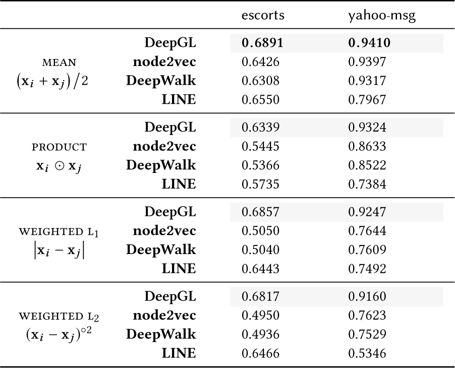

This is a web copy of https://doi.org/10.1145/3184558.3191524 originally published by ACM Press, redistributed under the terms of Creative Commons Attribution 4.0 (CC BY 4.0). The modifications from the original are solely to improve HTML aiming to make it Findable, Accessible, Interoperable and Reusable. augmenting HTML metadata and avoiding ACM trademark. To reference this HTML version, use:
Permalink: https://w3id.org/oa/10.1145/3184558.3191524
DOI: https://doi.org/10.1145/3184558.3191524
WWW '18: Proceedings of The Web Conference 2018, Lyon, France, April 2018
This paper presents a general inductive graph representation learning framework called DeepGL for learning deep node and edge features that generalize across-networks.1In particular, DeepGL begins by deriving a set of base features from the graph (e.g., graphlet features) and automatically learns a multi-layered hierarchical graph representation where each successive layer leverages the output from the previous layer to learn features of a higher-order. Contrary to previous work, DeepGL learns relational functions (each representing a feature) that naturally generalize across-networks and are therefore useful for graph-based transfer learning tasks. Moreover, DeepGL naturally supports attributed graphs, learns interpretable inductive graph representations, and is space-efficient (by learning sparse feature vectors). In addition, DeepGL is expressive, flexible with many interchangeable components, efficient with a time complexity of $\mathcal {O}(|E|)$ , and scalable for large networks via an efficient parallel implementation. Compared with recent methods, DeepGL is (1) effective for across-network transfer learning tasks and large (attributed) graphs, (2) space-efficient requiring up to 6 × less memory, (3) fast with up to 182 × speedup in runtime performance, and (4) accurate with an average improvement in AUC of 20% or more on many learning tasks and across a wide variety of networks.
CCS Concepts: • Computing methodologies → Artificial intelligence; Machine learning; • Mathematics of computing → Graph algorithms; Combinatorics; Graph theory; • Information systems → Data mining; • Theory of computation → Graph algorithms analysis; Streaming, sublinear and near linear time algorithms; Parallel algorithms; Logical and relational learning;
ACM Reference Format:
Ryan A. Rossi, Rong Zhou, and Nesreen K. Ahmed. 2018. Deep Inductive Network Representation Learning. In WWW '18 Companion: The 2018 Web Conference Companion, April 23–27, 2018, Lyon, France. ACM, New York, NY, USA 9 Pages. https://doi.org/10.1145/3184558.3191524
Learning a useful graph representation lies at the heart and success of many machine learning tasks such as node and link classification [20, 34], anomaly detection [5], link prediction [6], dynamic network analysis [21], community detection [25], role discovery [27], visualization and sensemaking [24], network alignment [16], and many others. Indeed, the success of machine learning methods largely depends on data representation [12, 28]. Methods capable of learning such representations have many advantages over feature engineering in terms of cost and effort. For a survey and taxonomy of relational representation learning, see [28].
Recent work has largely been based on the popular skip-gram model [18] originally introduced for learning vector representations of words in the natural language processing (NLP) domain. In particular, DeepWalk [23] applied the successful word embedding framework from [19] (called word2vec) to embed the nodes such that the co-occurrence frequencies of pairs in short random walks are preserved. More recently, node2vec [13] introduced hyperparameters to DeepWalk that tune the depth and breadth of the random walks. These approaches have been extremely successful and have shown to outperform a number of existing methods on tasks such as node classification.
However, the past work has focused on learning only node features [13, 23, 32] for a specific graph. Features from these methods do not generalize to other networks and thus are unable to be used for across-network transfer learning tasks.1 In contrast, DeepGL learns relational functions that generalize for computation on any arbitrary graph, and therefore naturally supports across-network transfer learning tasks such as across-network link classification, network alignment, graph similarity, among others. Existing methods are also not space-efficient as the node feature vectors are completely dense. For large graphs, the space required to store these dense features can easily become too large to fit in-memory. The features are also notoriously difficult to interpret and explain which is becoming increasingly important in practice [9, 33]. Furthermore, existing embedding methods are also unable to capture higher-order subgraph structures as well as learn a hierarchical graph representation from such higher-order structures. Finally, these methods are also inefficient with runtimes that are orders of magnitude slower than the algorithms presented in this paper (as shown later in Section 3). Other key differences and limitations are discussed below.
In this work, we present a general, expressive, and flexible deep graph representation learning framework called DeepGL that overcomes many of the above limitations.2 Intuitively, DeepGL begins by deriving a set of base features using the graph structure and any attributes (if available). The base features are iteratively composed using a set of learned relational feature operators that operate over the feature values of the (distance-ℓ) neighbors of a graph element (node, edge; see Table 1) to derive higher-order features from lower-order ones forming a hierarchical graph representation where each layer consists of features of increasingly higher orders. At each feature layer, DeepGL searches over a space of relational functions defined compositionally in terms of a set of relational feature operators applied to each feature given as output in the previous layer. Features (or relational functions) are retained if they are novel and thus add important information that is not captured by any other feature in the set. See below for a summary of the advantages and properties of DeepGL.
The proposed approach, DeepGL, provides a general powerful framework for learning deep graph representations from attributed graphs that are naturally inductive for use in across-network learning tasks. DeepGL overcomes many limitations of existing work and has the following key properties:
| G | (un)directed (attributed) graph |
| A | sparse adjacency matrix of the graph G = (V, E) |
| N, M | number of nodes and edges in the graph |
| F, L | number of learned features and layers |
| $\mathcal {G}$ | set of graph elements {g 1, g 2, ⋅⋅⋅} (nodes, edges) |
| $d^{+}_v$ , $d^{-}_{v}$ , dv | outdegree, indegree, degree of vertex v |
| $\Gamma ^{+}_{}\!(g_i)$ , $\Gamma ^{-}_{}\!(g_i)$ | out/in neighbors of graph element gi |
| Γ(gi ) | neighbors (adjacent graph elements) of gi |
| Γ ℓ(gi ) | ℓ-neighborhood $\Gamma (g_i) = \lbrace g_j \in \mathcal {G} \,|\, \mathrm{dist}(g_i, g_j) \le \ell \rbrace$ |
| dist(gi , gj ) | shortest distance between gi and gj |
| S | set of graph elements related to gi , e.g., S = Γ(gi ) |
| X | a feature matrix |
| x | an N or M-dimensional feature vector |
| xi | the i-th element of x for graph element gi |
| |X| | number of nonzeros in a matrix X |
| $\mathcal {F}$ | set of feature definitions/functions from DeepGL |
| $\mathcal {F}_k$ | k-th feature layer (where k is the depth) |
| fi | relational function (definition) of x i |
| Φ | set of relational operators Φ = {Φ 1, ⋅⋅⋅, ΦK } |
| $\mathbb {K}(\cdot)$ | a feature score function |
| λ | tolerance/feature similarity threshold |
| α | transformation hyperparameter (e.g., bin size in log binning 0 ≤ α ≤ 1) |
| x′ = Φi ⟨x⟩ | relational operator applied to each graph element |
This section presents the DeepGL framework. Since the framework naturally generalizes for learning node and edge representations, it is described generally for a set of graph elements (e.g., nodes or edges).3
The first step of DeepGL (Alg. ) is to derive a set of base graph features4using the graph topology and attributes (if available). Initially, the feature matrix X contains only the attributes given as input by the user. If no attributes are provided, then X will consist of only the base features derived below. Note that DeepGL can use any arbitrary set of base features, and thus it is not limited to the base features discussed below. Given a graph G = (V, E), we first decompose G into its smaller subgraph components called graphlets (network motifs) [1] using local graphlet decomposition methods [3] and concatenate the graphlet count-based feature vectors to the feature matrix X. This work derives such features by counting all node or edge orbits with up to 4 and/or 5-vertex graphlets. Orbits (graphlet automorphisms) are counted for each node or edge in the graph based on whether a node or edge-based feature representation is warranted (as our approach naturally generalizes to both). Note there are 15 node and 12 edge orbits with 2-4 nodes; and 73 node and 68 edge orbits with 2-5 nodes.
We also derive simple base features such as in/out/total/weighted degree and k-core numbers for each graph element (node, edge) in G. For edge feature learning we derive edge degree features for each edge (v, u) ∈ E and each ○ ∈ { +, ×} as follows:
A key advantage of DeepGL lies in its ability to naturally handle attributed graphs. In particular, any set of initial attributes given as input can simply be concatenated with X and treated the same as the initial base features.
In this section, we formulate the space of relational functions5 that can be expressed and searched over by DeepGL. A relational function (feature) in DeepGL is defined as a composition of relational feature operators applied to an initial base feature x. Recall that unlike recent node embedding methods [13, 23, 32], the proposed approach learns graph functions that are transferable across-networks for a variety of important graph-based transfer learning tasks such as across-networkprediction, anomaly detection, graph similarity, matching, among others.
2.2.1 Composing Relational Functions. The space of relational functions searched via DeepGL is defined compositionally in terms of a set of relational feature operators Φ = {Φ 1, ⋅⋅⋅, ΦK }. A few relational feature operators are defined formally in Table 2; see [28] (pp. 404) for a wide variety of other useful relational feature operators. The expressivity of DeepGL (space of relational functions expressed by DeepGL) depends on a few flexible and interchangeable components including: (i) the initial base features (derived using the graph structure, initial attributes given as input, or both), (ii) a set of relational feature operators Φ = {Φ 1, ⋅⋅⋅, ΦK }, (iii) the sets of “related graph elements” $S \in \mathcal {S}$ (e.g., the in/out/all neighbors within ℓ hops of a given node/edge) that are used with each relational feature operator Φp ∈ Φ, and finally, (iv) the number of times each relational function is composed with another (i.e., the depth). Observe that under this formulation each feature vector x′ from X (that is not a base feature) can be written as a composition of relational feature operators applied over a base feature. For instance, given an initial base feature x, by abuse of notation let x′ = Φk (Φj (Φi ⟨x⟩)) = (Φk ○ Φj ○ Φi )(x) be a feature vector given as output by applying the relational function constructed by composing the relational feature operators Φk ○ Φj ○ Φi to every graph element $g_i \in \mathcal {G}$ and its set S of related elements.6Obviously, more complex relational functions are easily expressed such as those involving compositions of different relational feature operators (and possibly different sets of related graph elements). Furthermore, DeepGL is able to learn relational functions that often correspond to increasingly higher-order subgraph features based on a set of initial lower-order (base) subgraph features (Figure 2). Intuitively, just as filters are used in Convolutional Neural Networks (CNNs) [12], one can think of DeepGL in a similar way, but instead of simple filters, we have features derived from lower-order subgraphs being combined in various ways to capture higher-order subgraph patterns of increasingly complexity at each successive layer.
2.2.2 Summation and Multiplication of Functions. We can also derive a wide variety of relational functions compositionally by adding and multiplying relational functions (e.g., Φi + Φj , and Φi × Φj ). A sum of relational functions is similar to an OR operation in that two instances are “close” if either has a large value, and similarly, a product of relational functions is analogous an AND operation as two instances are close if both relational functions have large values.
| Operator | Definition |
| Hadamard | $\Phi \langle S, {\rm x} \rangle = \prod \limits _{s_j \in S} x_{j}$ |
| mean | $\Phi \langle S, {\rm x} \rangle = \frac{1}{|S|} \sum \limits _{s_j \in S} x_{j}$ |
| sum | $\Phi \langle S, {\rm x} \rangle = \sum \limits _{s_j \in S} x_{j}$ |
| maximum | $\Phi \langle S, {\rm x} \rangle = \max \limits _{s_j \in S} \; x_{j}$ |
| Weight. Lp | $\Phi \langle S, {\rm x} \rangle = \sum \limits _{s_j \in S} \left|x_{i} - x_{j}\right|^{p}$ |
| RBF | $\Phi \langle S, {\rm x} \rangle =\exp \Big (- \frac{1}{\sigma ^2} \sum \limits _{s_j \in S} \big [x_{i} - x_{j}\big ]^{2}\Big)$ |
A general and flexible framework for DeepGL is given in Alg. . Recall that DeepGL begins by deriving a set of base features which are used as a basis for learning deeper and more discriminative features of increasing complexity (Line ). The base feature vectors are then transformed (Line ). For instance, one may transform each feature vector x i using logarithmic binning as follows: sort x i in ascending order and set the αM graph elements (edges/nodes) with smallest values to 0 where 0 < α < 1, then set α fraction of remaining graph elements with smallest value to 1, and so on. Many other techniques exist for transforming the feature vectors and the selected technique will largely depend on the graph structure.
The framework proceeds to learn a hierarchical graph representation (Figure 2) where each successive layer represents increasingly deeper higher-order (edge/node) graph functions: $\mathcal {F}_{1} {\lt} \mathcal {F}_{2} {\lt} \cdots {\lt} \mathcal {F}_{\tau }$ s.t. if i < j then $\mathcal {F}_{j}$ is said to be deeper than $\mathcal {F}_{i}$ . In particular, the feature layers $\mathcal {F}_2, \mathcal {F}_{3}, \cdots , \mathcal {F}_{\tau }$ are derived as follows (Alg. 1 Lines -): First, we derive the feature layer $\mathcal {F}_{\tau }$ by searching over the space of graph functions that arise from applying the relational feature operators Φ to each of the novel features $f_i \in \mathcal {F}_{\tau -1}$ learned in the previous layer (Alg. 1 Line ). An algorithm for deriving a feature layer is provided in Alg. . Next, the feature vectors from layer $\mathcal {F}_{\tau }$ are transformed in Line as discussed previously.
The resulting features in layer τ are then evaluated. The feature evaluation routine (in Alg. 1 Line ) chooses the important features (relational functions) at each layer τ from the space of novel relational functions (at depth τ) constructed by applying the relational feature operators to each feature (relational function) learned (and given as output) in the previous layer τ − 1. Notice that DeepGL is extremely flexible as the feature evaluation routine (Alg. ) called in Line of Alg. 1 is completely interchangeable and can be fine-tuned for specific applications and/or data. This approach derives a score between pairs of features. Pairs of features x i and x j that are strongly dependent as determined by the hyperparameter λ and evaluation criterion $\mathbb {K}$ are assigned $W_{ij}=\mathbb {K}({\rm x}_i,\, {\rm x}_j)$ and Wij = 0 otherwise (Alg. Line -). More formally, let EF denote the set of connections representing dependencies between features:
In contrast to node embedding methods that output only a node feature matrix X, DeepGL also outputs the (hierarchical) relational functions $\mathcal {F}$ corresponding to the learned features. Maintaining the relational functions are important for transferring the features to another arbitrary graph of interest, but also for interpreting them. Moreover, DeepGL is an inductive representation learning approach as the relational functions can be used to derive embeddings for new nodes or even graphs.
We introduce the notion of feature diffusion where the feature matrix at each layer can be smoothed using an arbitrary feature diffusion process. As an example, suppose X is the resulting feature matrix from layer τ, then we can set $\bar{{\bf X}}^{(0)}\leftarrow {\bf X}$ and solve
Recall that M is the number of edges, N is the number of nodes, and F is the number of features.
2.5.1 Learning. The total computational complexity of the edge representation learning from the DeepGL framework is:
2.5.2 Inductive relational functions. We now state the computational complexity of directly computing the set of inductive relational functions (feature definitions) which were previously learned on another arbitrary graph. Computation of the relational functions $\mathcal {F}$ on another arbitrary graph is important for inductive across-network learning tasks. Given the set of learned relational functions $\mathcal {F}$ , the total computational complexity of the edge relational functions is:
Thus, the runtime of deriving the edge and node relational functions in DeepGL is linear in the number of edges. Computing the set of inductive relational functions on another arbitrary graph obviously requires less work than learning the actual set of inductive relational functions (Section 2.5.1). The key difference is that features are not evaluated when deriving the relational functions directly. In contrast, representation learning in DeepGL scores the features at each layer.
This section demonstrates the effectiveness of the proposed framework.
In these experiments, we use the following instantiation of DeepGL: Features are transformed using logarithmic binning and evaluated using a simple agreement score function where $\mathbb {K}({\rm x}_i, {\rm x}_j)=$ fraction of graph elements that agree. More formally, agreement scoring is defined as:
See Table 2. Note Φ prod refers to the Hadamard relational operator defined formally in Table 2. As an aside, DeepGL has fewer hyperparameters than node2vec, DeepWalk, and LINE used in the comparison below. The specific model defined by the above instantiation of DeepGL is selected using 10-fold cross-validation on 10% of the labeled data. Experiments are repeated for 10 random seed initializations. All results are statistically significant with p-value < 0.01.
We evaluate the proposed framework against node2vec [13], DeepWalk [23], and LINE [32]. For node2vec, we use the hyperparameters and grid search over p, q ∈ {0.25, 0.50, 1, 2, 4} as mentioned in [13]. The experimental setup mentioned in [13] is used for DeepWalk and LINE. Unless otherwise mentioned, we use logistic regression with an L2 penalty and one-vs-rest for multiclass problems. Data has been made available at NetworkRepository [26].7
|  |
We first evaluate the effectiveness of DeepGL for link classification. To be able to compare DeepGL to node2vec and the other methods, we focus in this section on within-network link classification. For comparison, we use the same set of binary operators to construct features for the edges indirectly using the learned node representations: Given the feature vectors x i and x j for node i and j, (x i + x j )/2 is the
Notice that node2vec, DeepWalk, and LINE all require that the training graph contain at least one edge among each node in G. However, DeepGL overcomes this fundamental limitation and can actually predict the class label of edges that are not in the training graph as well as the class labels of edges in an entirely different network.
Learning sparse space-efficient node and edge feature representations is of vital importance for large networks where storing even a modest number of dense features is impractical (especially when stored in-memory). Despite the importance of learning a sparse space-efficient representation, existing work has been limited to discovering completely dense (node) features [13, 23, 32]. To understand the effectiveness of the proposed framework for learning sparse graph representations, we measure the density of each representation learned from DeepGL and compare these against the state-of-the-art methods [13, 23]. We focus first on node representations since existing methods are limited to only node features. Results are shown in Figure 3. In all cases, the node representations learned by DeepGL are extremely sparse and significantly more space-efficient than node2vec [13] as observed in Figure 3. DeepWalk and LINE use nearly the same space as node2vec, and thus are omitted for brevity. Strikingly, DeepGL uses only a fraction of the space required by existing methods (Figure 3). Moreover, the density of node and edge representations from DeepGL is between $\big [{{\begin{array}{*10c}0.162, & 0.334\end{array}}}\big ]$ for nodes and $\big [{{\begin{array}{*10c}0.164, & 0.318\end{array}}}\big ]$ for edges and up to 6 × more space-efficient than existing methods.
Notably, recent node embedding methods not only output dense node features, but are also real-valued and often negative (e.g., [13, 23, 32]). Thus, they require 8 bytes per feature-value, whereas DeepGL requires only 2 bytes and can sometimes be reduced to even 1 byte if needed by adjusting α (i.e., the bin size of the log binning transformation). To understand the impact of this, assume both approaches learn a node representation with 128 dimensions (features) for a graph with 10,000,000 nodes. In this case, node2vec, DeepWalk, and LINE require 10.2GB, whereas DeepGL uses only 0.768GB (assuming a modest 0.3 density) — a significant reduction in space by a factor of 13.
To evaluate the performance and scalability of the proposed framework, we learn node representations for Erdös-Rényi graphs of increasing size (from 100 to 10,000,000 nodes) such that each graph has an average degree of 10. We compare the performance of DeepGL against node2vec [13] which is designed specifically to be scalable for large graphs and shown to be faster than DeepWalk and LINE. Default parameters are used for each method. In Figure 4, we observe that DeepGL is significantly faster and more scalable than node2vec. In particular, node2vec takes 1.8 days (45.3 hours) for 10 million nodes, whereas DeepGL finishes in only 15 minutes; see Figure 4. Strikingly, this is 182 times faster than node2vec.
This section investigates the parallel performance of DeepGL. To evaluate the effectiveness of the parallel algorithm we measure speedup defined as $S_p = \frac{T_1}{T_p}$ where T 1 and Tp are the execution time of the sequential and parallel algorithms (w/ p processing units), respectively. In Figure 5, we observe strong parallel scaling for all DeepGL variants with the edge representation learning variants performing slightly better than the node representation learning methods from DeepGL. Results are reported for ${\mathsf {soc}\text{--}{\mathbf {\tt gowalla}}}$ on a machine with 4 Intel Xeon E5-4627 v2 3.3GHz CPUs. Other graphs and machines gave similar results.
| graph | $|\mathcal {C}|$ | $\mathrm{\bf DeepGL}$ | node2vec |
| DD242 | 20 | 0.730 | 0.673 |
| DD497 | 20 | 0.696 | 0.660 |
| DD68 | 20 | 0.730 | 0.713 |
| ENZYMES118 | 2 | 0.779 | 0.610 |
| ENZYMES295 | 2 | 0.872 | 0.588 |
| ENZYMES296 | 2 | 0.823 | 0.610 |
For node classification, we use the $\emph {i.i.d.}$ variant of $\textsc {rsm}$ [29] since it is able to handle multiclass problems in a direct fashion (as opposed to indirectly, e.g., one-vs-rest) and consistently outperformed other indirect approaches such as LR and SVM. In particular, $\textsc {rsm}$ assigns a test vector x i to the class that is most similar $\emph {w.r.t.}$ the training vectors (i.e., feature vectors of the nodes with known labels); see [29] for further details. Similarity is measured using the RBF kernel and RBF's hyperparameter σ is set using cross-validation with a grid search over σ ∈ {0.001, 0.01, 0.1, 1}. Results are shown in Table 4. In all cases, we observe that DeepGL significantly outperforms node2vec across all graphs and node classification problems including both binary and multiclass problems. Further, DeepGL achieves the best improvement in AUC on ENZYMES295 of 48%. As an aside, results for DeepWalk and LINE were removed for brevity since node2vec outperformed them in all cases.
Related research is categorized below.
Node embedding methods: There has been a lot of interest recently in learning a set of useful node features from large-scale networks automatically [13, 22, 23, 32]. In particular, recent methods that apply the popular word2vec framework to learn node embeddings [13, 23, 32]. The proposed DeepGL framework differs from these methods in six fundamental ways: (1) DeepGL learns complex relational functions that generalize for across-network transfer learning. Features learned from DeepGL on one graph can be extracted from another graph for transfer learning tasks such as network alignment, graph similarity, role discovery, temporal graph modeling, among others. (2) DeepGL learns sparse features and thus is extremely space-efficient for large networks. (3) DeepGL learns important and useful edge and node representations whereas existing work is limited to node features [13, 23, 32]. (4) DeepGL naturally supports attributed graphs. (5) DeepGL is fast and efficient with a runtime that is linear in the number of edges. (6) DeepGL is also completely parallel and shown in Section 3 to scale strongly.
There is also another related body of work focused on attributed graphs. Recently, Huang et al. [14] proposed a label informed embedding method for attributed networks. This approach assumes the graph is labeled and uses this information to improve predictive performance. However, this work is significantly different. First and foremost, while DeepGL is able to naturally support attributed graphs, this work does not focus on such graphs. Moreover, DeepGL does not require attributes or class labels on the nodes. Another important fundamental difference is that DeepGL learns features representing relational functions that generalize for extraction on any other arbitrary graph. The relational functions naturally represent higher-order structures when based on lower-order subgraph features (Figure 2). DeepGL also learns features that are sparse and therefore space-efficient for large graphs. Moreover, it is fast with a runtime that is linear in the number of edges and is completely parallel with strong scaling. There has also been some recent work on heterogeneous network embeddings [10, 11, 37], semi-supervised network embeddings [15, 38], and methods for improving the learned representations [31, 35, 36]. This work investigates entirely different problems than the one discussed in this paper.
We can also use the inferred embeddings for graph-based transfer learning. This is possible since DeepGL learns relational functions that generalize across-networks and therefore are easily extracted on another arbitrary graph. Other key differences were summarized previously in Section 1.
Higher-order network analysis: Other methods use high-order network properties (such as graphlet frequencies) as features for graph classification [34]. Graphlets (network motifs) are small induced subgraphs and have been used for graph classification [34], role discovery [2], and visualization and exploratory analysis [1]. However, our work focuses on using graphlet frequencies as base features for learning node and edge representations from large networks. To the best of our knowledge, this paper is the first to use network motifs (including all motifs of size 3, 4, and 5 vertices) as base features for graph representation learning.
Sparse graph feature learning: This work proposes the first practical space-efficient approach that learns sparse node/edge feature vectors. Notably, DeepGL requires significantly less space than existing node embedding methods [13, 23, 32] (see Section 3). In contrast, existing embedding methods store completely dense feature vectors which is impractical for any relatively large network, e.g., they require more than 3TB of memory for a 750 million node graph with 1K features.
We proposed DeepGL, a general, flexible, and highly expressive framework for learning deep node and edge features that generalize for across-network transfer learning tasks. Each feature learned by DeepGL corresponds to a composition of relational feature operators applied over a base feature. Thus, features learned by DeepGL are interpretable and naturally generalize for across-network transfer learning tasks as they can be derived on any arbitrary graph. The framework is flexible with many interchangeable components, expressive, interpretable, parallel, and is both space- and time-efficient for large graphs with runtime that is linear in the number of edges. DeepGL has all the following desired properties:
1This manuscript first appeared in April 2017 as R. Rossi et al., “Deep Feature Learning for Graphs” [30].
1The terms transfer learning and inductive learning are used interchangeably.
2Note a deep learning method as defined by Bengio et al. [7, 8] is one that learns multiple levels of representation with higher levels capturing more abstract concepts through a deeper composition of computations [12, 17]. This definition includes neural network based approaches as well as DeepGL and many other deep learning paradigms.
3For convenience, DeepGL-edge and DeepGL-node are sometimes used to refer to the edge and node representation learning variants of DeepGL, respectively.
4The term graph feature refers to an edge or node feature.
5The terms graph function and relational function are used interchangeably.
6For simplicity, we use Φ⟨x⟩ (whenever clear from context) to refer to the application of Φ to all sets S derived from each graph element $g_i \in \mathcal {G}$ and thus the output of Φ⟨x⟩ in this case is a feature vector with a single feature-value for each graph element.
7See http://networkrepository.com/ for data description and statistics
8Note x○2 is the element-wise Hadamard power; x i ⊙ x j is the element-wise product.
This paper is published under the Creative Commons Attribution-NonCommercial-NoDerivs 4.0 International (CC-BY-NC-ND 4.0) license. Authors reserve their rights to disseminate the work on their personal and corporate Web sites with the appropriate attribution.
WWW '18, April 23-27, 2018, Lyon, France
© 2018; IW3C2 (International World Wide Web Conference Committee), published under Creative Commons CC-BY-NC-ND 4.0 License. ACM ISBN 978-1-4503-5640-4/18/04.
DOI: https://doi.org/10.1145/3184558.3191524